Wholesale drinking glasses in soda-lime and borosilicate glass, 200-500ml, private label from MOQ 500 pcs. FDA and LFGB reports available.
Basic water glasses for hotels, restaurants and supermarket private label.
Short heavy-based glasses for spirits, with pressed and faceted patterns.
Tall juice, soda and beer glasses for beverage service and retail packs.
Looking for the full range? Browse the complete Double-Wall Glassware gallery with model numbers and spec sheets.
12 models shown in this series — click any photo to enlarge. Full model list with dimensions available on request.
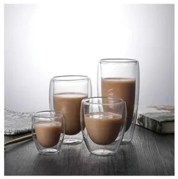
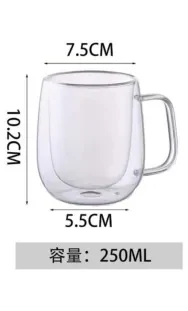
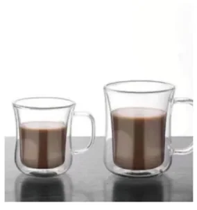
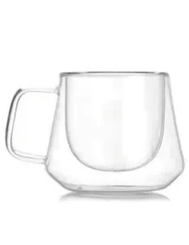
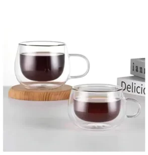
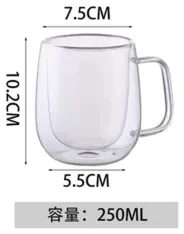
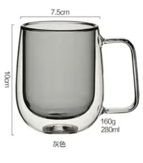
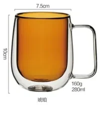
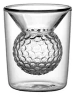
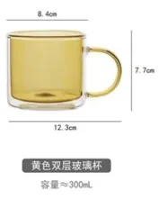
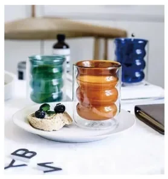
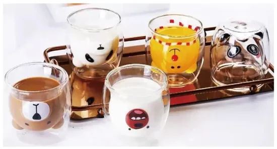
| Material | Soda-lime glass / borosilicate glass |
| Capacity | 180ml - 500ml |
| Production | Machine pressed and machine blown |
| Wall | Regular wall and heavy wall |
| MOQ | 500 pcs per design |
| Lead time | 30-45 days after sample approval |
| Certification | FDA, LFGB, Prop 65 reports on request |
| Packing | Bubble wrap + master carton, drop tested |
Existing pressed patterns cover most requests. A new pattern is quoted separately with a tooling fee.
Bulk carton, shrink pack, multi-pack carton or gift box, with your barcode and labelling applied.
Drinking glass ranges can be combined with tumblers, ceramic mugs and acrylic organiser into one shipment.
All lines share the same BSCI audited production base, and we can consolidate several categories into one container. custom ceramic mugsstoneware tablewaredouble wall glass tumblersglass water glassesacrylic spice jarsacrylic kitchen organisers
Main ranges: ceramic mugs · glassware · kitchen storage · all products
Soda-lime glass is cheaper and fine for cold drinks. Borosilicate resists thermal shock, so it is the safer choice for hot fills and repeated dishwashing.
MOQ is 500 pieces per design. Mixed designs can share one container to reduce freight per unit.
Yes. FDA food-contact, LFGB and California Prop 65 reports are available from accredited labs.
We pack each glass in bubble wrap with double-wall master cartons and validate the pack with drop testing before bulk production.
MOQ 500 pcs per design · 30-45 day production · FOB / CIF / DDP · reply within 24 hours